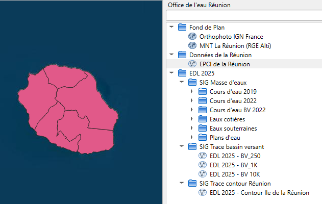

Le plugin QGIS
Le module QGIS est inspiré du plugin open source de GeoBretagne : https://github.com/geobretagne/qgis-plugin
{kind=link}
Pour renseigner des données il faut aller dans le dossier « config » puis éditer « config.json ».
Pour configurer l’emplacement du ce fichier, il faut se rendre dans le code « Office_de_leau/utils/plugin_globals.py » et modifier la ligne 50 et 132 de ce fichier.
Ce fichier de configuration permet de définir quelles données seront accessible via le plugin ou non. Ce plugin ne permet que de manipuler des flux WFS et WMS. Il faudra bien spécifier pour chaque données :
« title » : qui sera le titre affiché dans qgis
« description » : qui sera la description de la donnée dans qgis
« type » : qui sera « wms_layer » pour un flux WMS et « wfs_feature_type » pour un flux WFS
« params » : qui comprendra :
« url » : qui est l’url du flux
« name » : le nom de la donnée dans le geoserver
« outputFormat » : qui sera « image/jpeg » pour un flux WMS et « outputFormat »: « application/json » pour un flux WFS
« srs » : qui est l’EPSG de la projection de la donnée